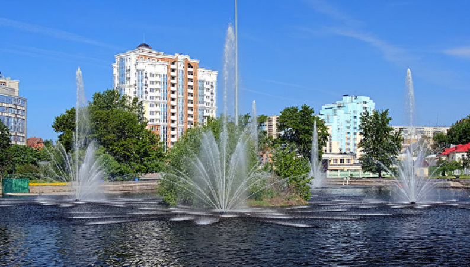
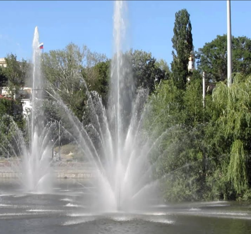

Достопримечательности Липецка


Комсомольский пруд (Липецк)
Комсомольский пруд — водохранилище в Липецке, образованное при устройстве в 1703 году плотины для нужд железоделательных заводов; плотина перегородила русло реки Липовки. Поэтому первоначально пруд назывался прудом Верхнего железоделательного завода, или Верхним прудом. Расположен на противоположной от Нижнего парка стороне Петровского проезда. Устройство плотины было упомянуто в отчётах департамента горных и соляных дел как о технике «достойной внимания всякого гидравлика».
Изображения:
 
Комсомольский пруд на карте: